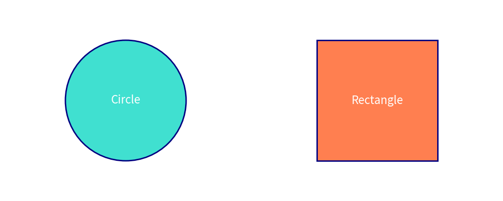

Welcome to the Drawlib Documentation!
Drawlib is a pure Python drawing library crafted to facilitate Illustration as Code rather than focusing solely on creating polished illustrations manually.
from drawlib.canvas import config
from drawlib.colors import Colors, Colors140
from drawlib.shapes import circle, rectangle
from drawlib.text import text
from drawlib.types import ShapeStyle, TextStyle
config(width=100, height=40)
circle(xy=(25, 20), radius=12, style=ShapeStyle(fill_color=Colors140.Turquoise, line_color=Colors.Navy, line_width=2))
text(xy=(25, 20), text="Circle", style=TextStyle(text_color=Colors.White, text_size=16))
rectangle(xy=(75, 20), width=24, height=24, style=ShapeStyle(fill_color=Colors140.Coral, line_color=Colors.Navy, line_width=2))
text(xy=(75, 20), text="Rectangle", style=TextStyle(text_color=Colors.White, text_size=16))

Documentation Navigation
1. Introductions
- About Drawlib
- Installation Guide
- Library Design Philosophy
- Quick Start Guide
- Release Notes
- Other Version Documentation
- Useful Links
2. Foundations
- Canvas & Coordinate System
- Coordinate Alignment
- Icons Guide
- Images Guide
- Lines Guide
- Line Styles
- Shapes Overview
- Circle Shapes
- Rectangle Shapes
- Arrow Shapes
- Shape Styling
- Text Guide
- Preset Styles Guide
- Building Multiple Images
- Programming Practices
3. SmartArts Diagrams
- SmartArts Overview
- SourceCode Highlighting
- Table Component
- Tree Component
- BoxList Component
- BubbleSpeech Component
- BulletPoints Component
- GridLayout Component
- Pyramid Component
4. Preset Styles
- Official Default Preset Styles
- Official Essentials Preset Styles
- Official Monochrome Preset Styles
- Advanced Preset Styles Topics
- Creating Custom Preset Styles